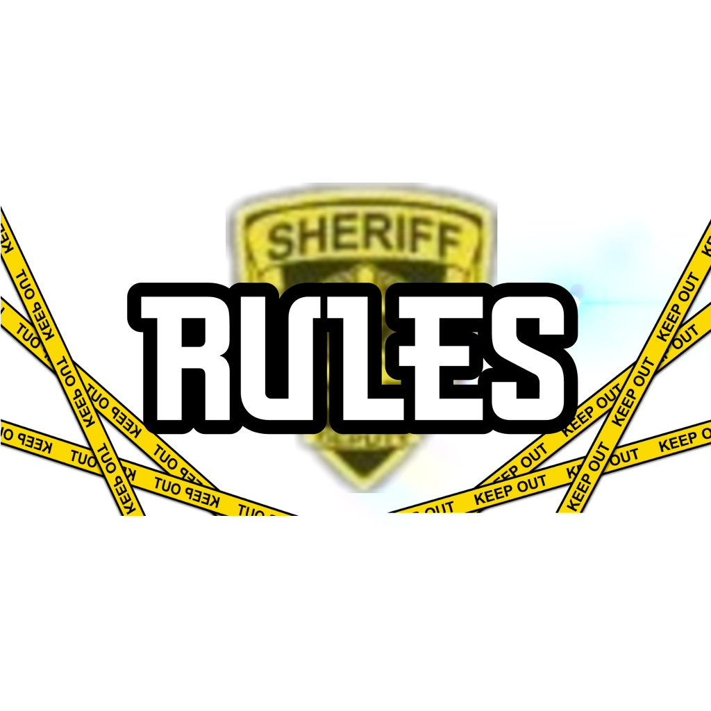

Répartition des cartes du Uno : Combien de cartes dans le Uno ? Pour jouer au Uno, il vous faut les 108 cartes réparties de cette manière : 19 cartes de couleur bleu, numérotées de 0 à 9 (2 pour chaque chiffre sauf pour le 0) 19 cartes de couleur rouge, numérotées de 0 à 9 (2 pour chaque chiffre sauf pour le 0) 19 cartes de couleur jaune, numérotées de 0 à 9 (2 pour chaque chiffre sauf pour le 0) 19 cartes de couleur verte, numérotées de 0 à 9 (2 pour chaque chiffre sauf pour le 0) et des cartes spéciales: 8 cartes « +2 », (2 pour chaque couleur) 8 cartes « Inversement de sens », (2 pour chaque couleur) 8 cartes « Passe ton tour », (2 pour chaque couleur) 4 cartes « Joker » 4 cartes « +4 » Le pouvoir des cartes spéciales Uno : La carte « +2 » : Lorsqu’un joueur joue cette carte, le joueur suivant doit piocher 2 cartes et passe son tour et cela même si c’est la première carte retournée en début de partie. La carte « Inversement de sens » : Lorsqu’un joueur joue cette carte, le sens de la partie est inversée. Si la partie se déroulait dans le sens des aiguilles d’une montre, elle passera donc dans le sens inverse. Même si elle est la première carte retournée en début de partie, elle doit être prise en compte. La carte « Passe ton tour » : Lorsqu’un joueur joue cette carte, le joueur suivant doit passer son tour. Même si elle est la première carte retournée en début de partie, elle doit être prise en compte. La carte « Joker » : Lorsqu’un joueur joue cette carte, il peut ou non choisir de changer de couleur en l’annonçant aux autre joueurs. Si elle est la première carte retournée en début de partie, le premier joueur choisit donc une couleur. La carte « +4 » : Lorsqu’un joueur joue cette carte, le joueur suivant doit piocher 4 cartes et passer son tour. De plus, le joueur qui a posé cette carte peut choisir ou non de changer de couleur. Attention cependant, cette carte ne peut être jouée seulement si le joueur n’a pas d’autre solution. Si un joueur décide de bluffer et qu’il se fait démasquer, il aura alors une pénalité. Comment jouer au Uno : Tout d’abord, un des joueurs distribue à chacun 7 cartes. Le reste des cartes fait office de pioche. Pour commencer, le joueur ayant distribué retourne la première carte de la pioche et le joueur situé à gauche commence la partie. Il doit recouvrir la carte de la pioche par une carte d’une même couleur, du même chiffre ou du même symbole. Si le joueur ne peut pas jouer, il a la possibilité de poser une carte « joker » ou « +4 ». Dans le cas ou le joueur ne possède aucune de ces cartes, il doit en piocher une. Si cette carte peut être jouée, il peut directement la poser, sinon il devra la conserver dans son jeu. Lorsque qu’un joueur n’a plus qu’une carte en sa possession, il doit crier « Uno » pour avertir tous les autres joueurs. S’il oublie de le faire et qu’un joueur s’en aperçoit, il devra piocher 2 cartes en pénalité. Le premier des joueurs à s’être débarrassé de toutes ses cartes gagne. Il faut alors compter les points : Les cartes numérotées se comptent suivant leur valeur. La carte « +2 » vaut 20 points. La carte « Inversement de sens » vaut 20 points. La carte « Passe ton tour » vaut 20 points. La carte « Joker » vaut 50 points. La carte « +4 » vaut 50 points.
retourner
jouer